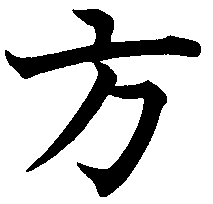
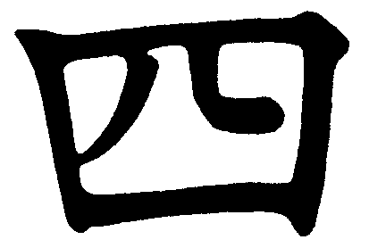

Shiho, Shihoo, Shihō of Shio?Genseiryu Karate


Er bestaat in de karatewereld buiten Japan nogal wat verwarring omtrent de juiste schrijfwijze en uitspraak van dit woord: de correcte schrijfwijze volgens het Hepburn-systeem (een systeem waarin de Japanse lettergrepen kunnen worden geschreven in ons westers alfabet) is Shihō. De ō, dus een o met een streepje of macron is een langgerekte o (in het Japans nèt ietsje langer uitgesproken dan een enkele o), dus je zou het ook kunnen schrijven als Shihoo. Maar woorden als Tōkyō worden bij ons ook niet met dubbele o geschreven, maar gewoon Tokyo (is eigenlijk Engels, in Nederland schrijven we Tokio). Je komt daarom veel Japanse woorden, die eigenlijk met dubbele o (of met een ō) geschreven zouden moeten worden, vaak tegen met slechts één o, zo dus ook shiho. Om de Japanse taal te respecteren, blijf ik het echter consequent met een macron (of dubbele o) schrijven, zoals vastgelegd in het Hepburn-systeem. Enkele andere woorden die ook vaak geschreven worden met een enkele o of u, waar het eigenlijk ō (of oo) of ū (of uu) moet zijn: ō-sensei, dōjō, dōgi, kyū, jū, budō, dōmo arigatō.
Herkomst en betekenis
Het woord Shihō wordt in het Japanse beeldschrift Kanji
(uit het Chinees overgenomen ideogrammen) geschreven als hier rechtsboven.
Het eerste teken, ,
is Shi en staat voor het getal 'vier'. Het tweede teken, , is Hou en betekent
'richting'. Dit laatste teken is eigenlijk weer een vereenvoudiging van 方向
(houkou, ook 'richting'). In het Japanse lettergrepenschrift (Hiragana
en Katakana) wordt Shihō geschreven als しほう.
Dit zijn drie lettergrepen: shi-ho-u, dus met een u!
Maar waarom schrijven wij dan niet Shihou?
Nou, dat zit zo: in het Japans wordt de combinatie ho+u
uitgesproken als hòò, net als in 'Holland', maar
'ho' iets langer uitgesproken. In het Romaji (dit is gewoon het Japanse
woord voor ons eigen Latijnse schrift) wordt dit dan ook meestal geschreven
als hoo. In het Hepburn-systeem (een systeem waarin de
regels van het Romaji zijn vastgelegd) is dan ook afgesproken dat de
combinatie o-u moet worden geschreven als ō
of in de vereenvoudigde versie oo.
Je moet ook weten dat woorden met een 'korte' o een andere betekenis krijgen.
Zo betekent hō (of hoo) 'richting', maar ho
(dus met één o) betekent 'zeil'. De enkele o wordt uitsproken als de o in
Holland, kort en krachtig. De dubbele o (of ō) wordt hetzelfde
uitgesproken maar ietsje langer aangehouden. De juiste uitspraak van Shihō
is dus 'shie-hòò'. Let trouwens ook op de 'h'-klank in
het midden, zeg niet 'shio',
want dat betekent 'zout' in het Japans! En karate nemen we natuurlijk
niet met een korreltje shio...
Let ook op de verwisselbaarheid met het woordje 'ushiro'. Dit betekent zoiets als omdraaien. Soms wordt hier onterecht 'shihō' voor gebruikt...
Wat is nou een Shihō?
Een Shihō is een techniek-oefening waarbij afweer-, stoot-
en/of traptechnieken in vier richtingen worden uitgevoerd. Zoals hierboven
al uitgelegd: Shihō betekent 'vier richtingen' in het Japans.
Shihō Tsuki bijvoorbeeld betekent ‘stoottechnieken in vier richtingen’.
De te beoefenen technieken worden in elke richting steeds weer herhaald, totdat
de oorspronkelijke positie weer is bereikt.
Een Shihō kan op allerlei manieren worden uitgevoerd, het is tenslotte
een techniek-oefening. Maar er zijn ook Shihō, die net als Kata
een naam hebben. Hierin zijn alle bewegingen dus vastgelegd. Binnen Genseiryu
zijn Shihō erg belangrijk. Eigenlijk net zo belangrijk (misschien
zelfs wel belangrijker!) als Kata. Zie de Shihō-pagina
voor de verschillende Shihō die bij Genseiryu worden beoefend.